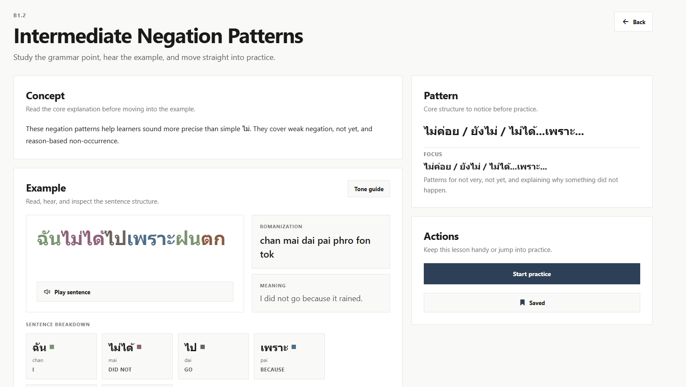
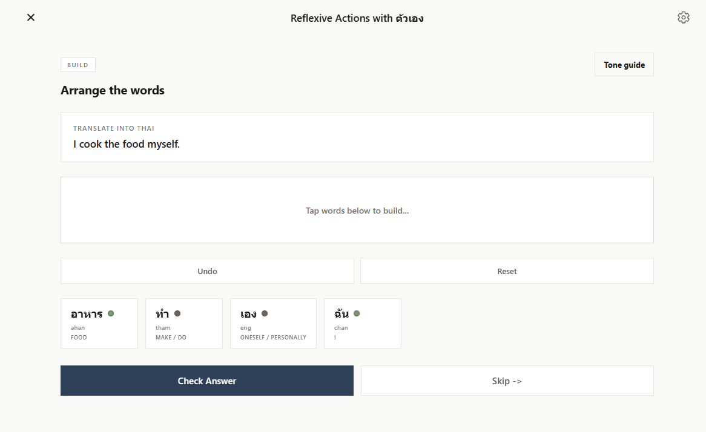
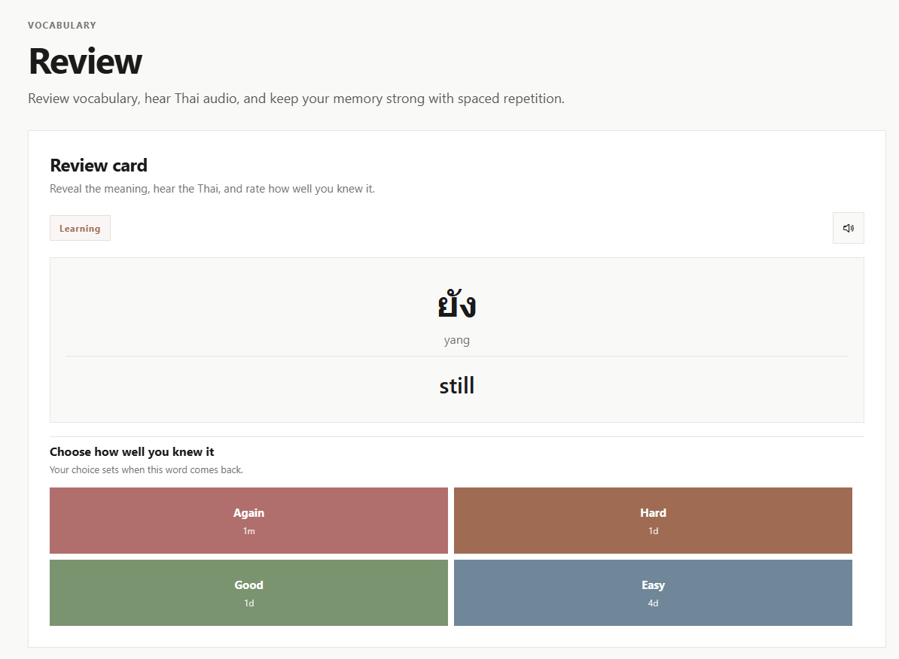
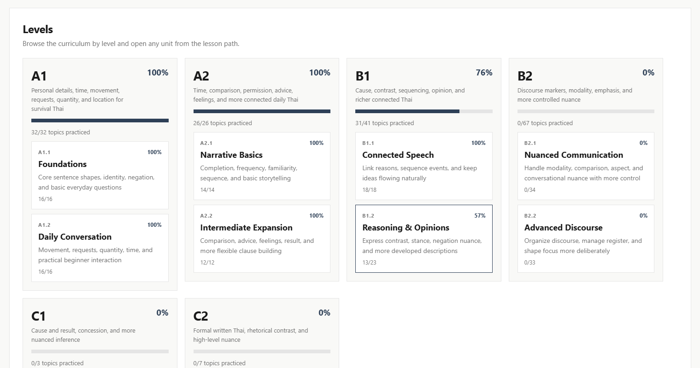

Keystone Thai
ไทย
Thai course
Learn Thai through grammar progression, example sentences, audio examples, and targeted repetition.
- Thai grammar learning
- Example sentence practice
- Audio examples
Learn through patterns, real sentences, and structured practice that actually sticks.
Each Keystone app keeps the learning flow familiar while the grammar content, sentence coverage, and examples stay specific to the language you are studying.
Learn Thai through grammar progression, example sentences, audio examples, and targeted repetition.
Study Japanese through pattern-based lessons, example sentence practice, and structured progression.
Work through TOPIK grammar with clear translations, example sentences, and a steady curriculum path.
Each Keystone course follows the same lesson system while covering a different exam or proficiency range.
CEFR-based grammar progression from foundations to advanced structure.
JLPT grammar coverage designed to move from beginner patterns to higher-level usage.
TOPIK-oriented grammar paths that keep beginner and intermediate study connected.
Switch between Thai, Japanese, and Korean, then move through study, choose, and build exercises. The demo advances when you answer correctly or when you click next.
Keystone keeps each lesson centered on one structure so the explanation, examples, audio, and practice all move in the same direction.
The goal is not to collect random phrases. The goal is to understand one piece of grammar until it feels familiar.
Begin with a single pattern so the lesson stays focused from the very first screen.
Example sentences show how the pattern works across different meanings and contexts.
Audio, translation, and breakdowns keep the grammar connected to real sound and real use.
Exercises return to the same structure so recognition turns into actual understanding.
Vocabulary matters, but grammar gives you the structure to understand, interpret, and create far more than a phrasebook can cover.
Keystone keeps each lesson centered on one structure so the examples, audio, and practice all point to the same idea.
These mockups show the kinds of screens learners move through inside the apps.

Read the concept, hear the example, and move straight into practice from one focused lesson page.

Arrange words, check the answer, and reinforce the same structure through focused sentence practice.

Review words you met in context, hear the Thai audio, and keep them active with spaced repetition.

See the full progression by level and jump into the unit that makes the most sense for your next step.
Explore the platform at no cost, then move to Keystone Access when you want the full curriculum, more example coverage, and more audio-rich practice across the product.
Keystone Access is designed for learners who want a smoother path through the curriculum, broader sentence coverage, and more practice for every grammar point.
Keystone is designed for people who want a clear, structured route into a language, whether they are just starting or trying to organize what they already know.
Keystone Languages currently presents Keystone Thai, Keystone Japanese, and Keystone Korean as core product lines.
They are built for learners who want a more structured, grammar-focused path instead of memorizing random phrases without context.
No. The progression is intended to guide beginners while still being useful for learners who want to organize intermediate grammar.
Keystone builds each lesson around one grammar point, then shows multiple example sentences, translations, audio, and practice around that same pattern.
Keystone Access unlocks the full grammar path, broader example coverage, and more practice across the course.
Yes. The courses are structured so beginners can start from the earliest level while more experienced learners can use the same system to organize what they already know.
Keystone is built around grammar first, but the words you meet inside sentences and context can be added into your vocabulary deck automatically, so you can review them later with the built-in SRS system.
Yes. Lessons and practice use audio so you can connect grammar patterns to real pronunciation and listening, not just written explanations.